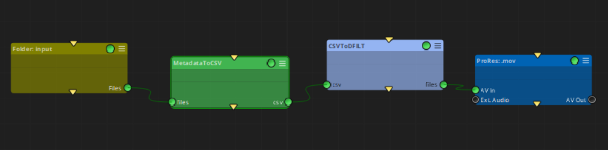
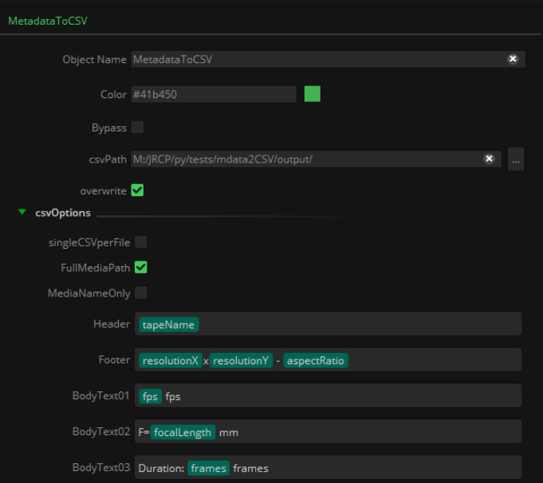

|
<< Click to Display Table of Contents >> Metadata To CSV |
This node takes input files from any other node, such a Folder node, and generates a .csv file with several columns with metadata information contained in those files.
It can also generate a single .csv file per input file, following the format of typical sidecar files.
It is mainly intended to work together with the CSVtoDFILT node, which will create a burn-in of the metadata to the final output file. However, it can also be used just to generate .csv files gathering information about the input files, as a convenient way to export metadata obtained with Mistika Workflows into a standard format readable and editable by many other applications.

The first column of the generated .csv file will include either the input file path or just the file name, depending on the toggle selected in the properties of the node. The rest of the columns will incorporate the Header, Footer and BodyTexts desired to be used in conjunction with the CSVtoDFILT node to burn-in in the final render. These columns can be filled with string literals, dynamic tokens metadata, or a combination of both. An example is provided in this figure:

files: input files with their associated metadata, given in UP / Universal Paths format, to be converted to .csv format.
csv: Path to the .csv file created by this node.
csvPath: Folder where the .csv file will be stored. The output .csv file name will be always constructed as csvPath/tabName_nodeName.csv
overwrite: If that .csv already exists, this property decides if it can be overwritten.
csvOptions:
singleCSVperFile: If active, if will create an independent .csv file per incoming file, in the style of a sidecar file.
FullMediaPath: Option to get the full media input file path in the first column. This option must be checked if the node is planned to feed a CSVtoDFILT node..
MediaNameOnly: Option to get only the input file name in the first column. Not suitable for using with the CSVtoDFILT node, but useful if just file information gathering is desired when generating the .csv file.
RemoveExtension: Do not include the extension of the incoming files.
Header, BodyText01..BodyTextXX, Footer: Fields to be used to fill the columns of each input file. They can be string literal, dynamic tokens, or a mix of both.